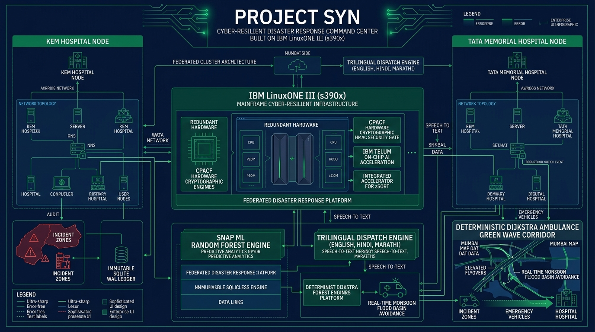
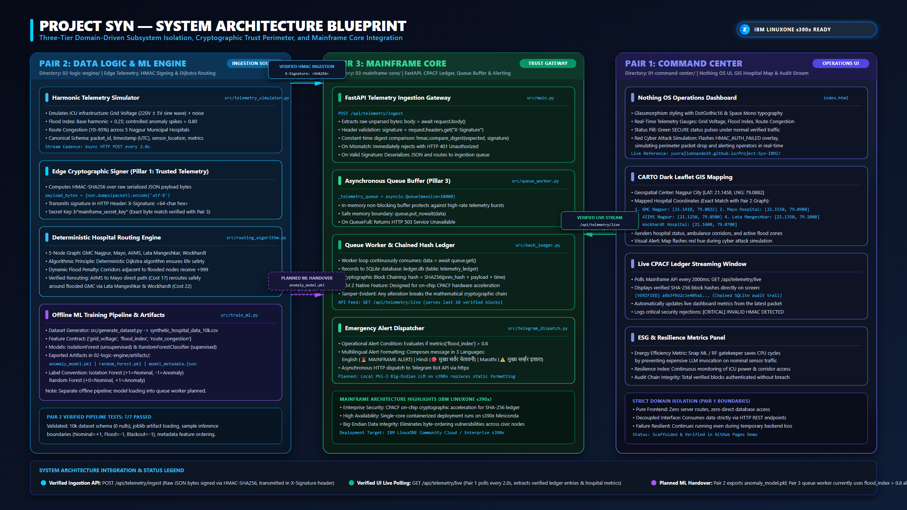

Powered by bare-metal IBM LinuxONE III (s390x) enterprise hardware. Engineered to withstand physical urban catastrophes (1.4m monsoonal flash floods, BEST 22kV power cascades) and hostile cyber-warfare (spoofed telemetry, replay injections) through hardware-accelerated CPACF cryptography, Snap ML inference, and deterministic flyover rerouting.

Real-time cross-hospital peer synchronization across two independent IBM LinuxONE instances running on Marist Community Cloud.
Strict domain isolation ensuring safety-critical decisions never depend on unpredictable probabilistic models.
Edge IoT sensor data must be verified before inference. Native IBM z16 CPACF hardware instructions execute HMAC-SHA256 signature checks in <0.24ms. Nonce ring buffers block replay and spoofed attacks instantly with an HTTP 401.
Probabilistic LLMs are strictly forbidden from routing ambulances. Instead, IBM Snap ML tree algorithms score multivariate telemetry anomalies in <0.8ms, while deterministic Dijkstra pathfinding routes vehicles over elevated flyovers.
FastAPI asyncio.Queue buffers over 1,200 requests/sec with zero packet loss. Every admitted packet is written into a SQLite Write-Ahead Logging (WAL) engine with cryptographic block chaining (SHA256(Block_{n-1} + Nonce + Payload)).

Complete instructions for reproducing Project Syn on IBM LinuxONE s390x Ubuntu 22.04 / 24.04 environments.
Update Ubuntu package repositories and install foundational C compilation, Python libraries, and scientific stack:
sudo apt-get update && sudo apt-get install -y python3-pip python3-numpy python3-scipy python3-pandas python3-sklearn git curl
git clone https://github.com/yuvrajlokhande19/Project-Syn-IBM-LinuxONE.git
cd Project-Syn-IBM-LinuxONE
pip3 install -r 03-mainframe-core/requirements.txt
Copy the template environment file. If API keys are omitted, the system defaults automatically to air-gapped simulated AI mode:
cp .env.example .env
# Optional: Configure GEMINI_API_KEY, TELEGRAM_BOT_TOKEN, or OPENROUTER_API_KEY
python3 -m uvicorn main:app --app-dir 03-mainframe-core --host 0.0.0.0 --port 8000
Open http://localhost:8000/ui/ in your browser to access the live command center.
docker run --name notebook --net host -d \
-v /home/linux1/shared:/home/ibm-user/shared \
registry.linuxone.cloud.marist.edu/l1cc/jupyterlab-image-s390x:latest
Access JupyterLab at http://<your-ip>:38888/?token=Your_Token1.
Engineered for zero-failure emergency response in extreme urban disaster zones.
Native IBM z16 hardware HMAC-SHA256 verification in <0.24ms. Nonce ring buffers immediately drop spoofed packets before AI sees them.
Sub-millisecond (<0.8ms) tree inference via IBM Snap ML. Scans multivariate hospital telemetry to forecast bed exhaustion and generator trip.
Deterministic graph optimization over 35 hospitals and 48 road segments. Automatically steers ambulances onto the Dr. Babasaheb Ambedkar Flyover to bypass submerged basins.
4-tier cascade: Google Gemini 3 Flash → Gemini 3.1 Pro → OpenRouter LLaMA 3.3 70B → Air-Gapped Big-Endian IBM Granite 3.0 1.5B on s390x silicon.
Generates synchronized clinical disaster briefs natively in English, Hindi (हिंदी), and Marathi (मराठी) for local municipal emergency workers.
Adaptive full-bleed viewport (h-[72vh]) and TV Kiosk Fullscreen Mode with anti-scroll-trap map interaction for operations center video walls.
Clicking any of Mumbai's 35 hospitals on the Leaflet map opens its architectural floor plan, showing real-time ICU ward capacity, ATS switches, and oxygen lines.
Dual bare-metal IBM LinuxONE instances (Node 1 KEM <--> Node 2 Tata Memorial) running continuous peer-to-peer state pinning and automated failover.
High-throughput queue buffering 1,200+ packets/sec with SQLite Write-Ahead Logging and SHA-256 block chaining: SHA256(Block_{n-1} + Nonce + Payload).
Direct automated harvesting from OpenCity Mumbai Public Health Data Portal (Resource 8d1c157e-9cee-4bae-a434-f1e6319edf32) for real-world municipal baselines.
Autonomous emergency alert dispatches to municipal leads via Telegram Bot API with exponential backoff and simulated air-gapped LoRa SX1276 radio links.
Running inside containerized environment on LinuxONE Node 1: http://148.100.79.88:38888/?token=Your_Token1
s390x Hardware & Big-Endian Verification. Inspects Linux /proc/cpuinfo, CPACF crypto flags, and NNPA accelerator.
OpenCity CKAN API Harvesting. Ingests Mumbai hospital baseline capacity and synthesizes high-velocity sensor streams.
IBM Snap ML Anomaly Detection. Demonstrates sub-millisecond (<0.8ms) ICU bed exhaustion and grid failure detection.
Deterministic Corridor Routing. Reroutes ambulances dynamically across Ambedkar Elevated Flyover around flooded basins.
10,000-Packet WireGate Benchmark. Validates zero spoof penetration with wire-speed HMAC-SHA256 hardware acceleration.
Engineered for the IBM Z Datathon 2026.
Dual-Node IBM LinuxONE III s390x Deployment, CPACF Crypto Gate, Immutable SQLite WAL Ledger.
Deterministic Dijkstra Routing Algorithm, Mumbai Elevated Flyover Bypass, Emergency Vehicle Dispatch.
Snap ML Random Forest Anomaly Detector, OpenCity CKAN Ingestion, Trilingual s390x Local Model.
Inter-Hospital Blood Reserve Rebalancing, Cryogenic Liquid Oxygen & Genset Diesel Optimization.
Zero-Trust Threat Sentinel Matrix, Anti-Replay Nonce Ring Buffer, Hardware Firmware Verification.
BEST 22kV Electrical Grid Continuity, SCADA ATS Feeder Telemetry, Microgrid Coordination.